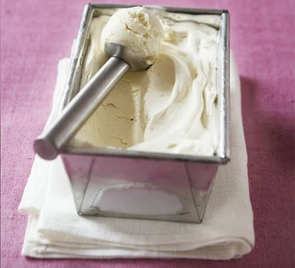

Easiest No-Churn Vanilla Ice Cream

Description
Condensed milk is a magic ingredient when making no-churn ice cream.
The end result will be creamy, smooth and not at all icy.
This recipe serves sixteen.
Ingredients
- 1 can sweetened condensed milk
- 1L pot double cream
- 2 tsp vanilla extract
Directions
- Put the condensed milk, cream and vanilla into a large bowl.
- Beat with an electric whisk until thick and quite stiff, a bit like clotted cream.
- Scrape into a freezer container or a large loaf tin, cover with cling film and freeze until solid.
- Take out of freezer and wait for a couple of minutes before serving.